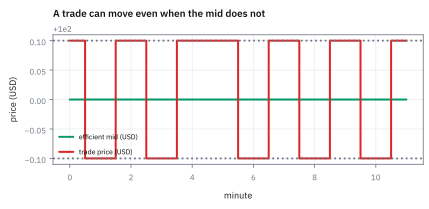
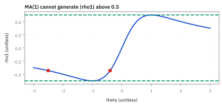
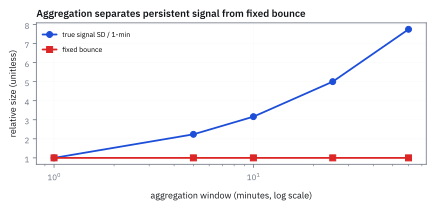

16.3 MA, ARMA, and ARIMA
MA จำข่าวของเมื่อวาน ไม่ได้จำค่าของเมื่อวาน ราคาที่เด้งระหว่าง bid กับ ask คือ MA(1) และร่องรอยนี้บอกทั้งต้นทุนซื้อขายและความผันผวนจริง
ผลตอบแทนรายนาทีของหุ้นราคา \$42 มี SD 0.10% ต่อนาที และ autocorrelation ที่ lag 1 เท่ากับ −0.345 ระบบความเสี่ยงคูณด้วยรากของจำนวนนาทีต่อปี (300 นาทีต่อวัน × 252 วัน) ได้ความผันผวน 27.5% ต่อปี แล้วเอาไปคิด VaR ตัวเลขนี้เชื่อได้ไหม และ bid–ask spread ของหุ้นตัวนี้กว้างกี่เซนต์?
ลองตอบก่อนเปิดเฉลย
ถ้าสมมติว่าราคาเป็นไปตามแบบจำลอง Roll ซึ่งมีข่าวใหม่กับการเด้งระหว่าง bid และ ask จะคำนวณได้ spread 0.1174% ของราคา หรือ 4.93 เซนต์ต่อหุ้น หักส่วนเด้งออกแล้วราคาจริงแกว่งแค่ 0.0557% ต่อนาที หรือ 15.3% ต่อปี ภายใต้แบบจำลองนี้ ตัวเลข 27.5% สูงกว่าความผันผวนของข่าวจริง 1.8 เท่า เพราะ 69% ของ variance รายนาทีคือการเด้ง ไม่ใช่ข่าว
สิ่งที่เราจะสร้าง
16.2 สร้างความจำของค่า: เดือนนี้เก็บ 88% ของสเปรดเดือนก่อน หัวข้อนี้สร้างความจำอีกแบบ คือความจำของข่าว: ค่าวันนี้มีเศษของข่าวเมื่อวานติดมาด้วย แล้วหายไปหมดในวันถัดไป แบบจำลองนี้ชื่อ moving-average process หรือ MA และตัวอย่างที่ชัดที่สุดในตลาดคือราคาซื้อขายที่เด้งระหว่าง bid กับ ask
เราจะนับการเด้งด้วยมือก่อน แล้วเขียนเป็น MA(1) หาลายเซ็นใน ACF และ PACF ที่แยกมันจาก AR(1) หาเพดานของมัน ใช้มันถอด spread และความผันผวนจริงแบบของ Roll ดูว่าความถี่ของข้อมูลเปลี่ยนภาพอย่างไร แล้วรวมสองความจำเป็น ARMA และปิดด้วย ARIMA สำหรับอนุกรมที่ต้องหาผลต่างก่อน ตัวเลขของหุ้น \$42 เป็นตัวอย่างสมมติ
ศัพท์ที่ใช้ในหัวข้อนี้
- MA(q)
- moving-average process: ค่าวันนี้คือข่าววันนี้บวกข่าวของ $q$ งวดก่อนถ่วงน้ำหนัก ความจำจึงหมดหลัง $q$ งวดพอดี ชื่อนี้ไม่ใช่เส้นค่าเฉลี่ยเคลื่อนที่ของราคาบนกราฟ
- ARMA(p, q)
- แบบจำลองที่มีทั้งความจำของค่า $p$ งวด (AR) และความจำของข่าว $q$ งวด (MA) ใช้เมื่อสองกลไกเกิดพร้อมกัน ด้วย parameter น้อยกว่าการใช้อย่างใดอย่างหนึ่งล้วน ๆ
- ARIMA(p, d, q)
- ARMA ที่ใช้กับผลต่างของอนุกรม $d$ ครั้ง ใช้กับระดับที่ไม่ stationary เช่นราคา ซึ่งหาผลต่างหนึ่งครั้งแล้วได้การเปลี่ยนแปลงที่ stationary
- PACF
- partial autocorrelation: สัมประสิทธิ์ของ lag $k$ ในสมการทำนายที่ใช้ $k$ lag ล่าสุดพร้อมกัน คือความสัมพันธ์ที่เหลือหลังหักส่วนที่ lag ใกล้กว่าอธิบายไปแล้ว ใช้คู่กับ ACF เพื่อเลือกระหว่าง AR กับ MA
- Invertibility
- เงื่อนไข $|\theta|\lt1$ ของ MA ที่ทำให้ถอยกลับไปหาข่าวจากข้อมูลได้ด้วยน้ำหนักที่จางลง มีไว้เลือกหนึ่งคำตอบจากสองค่าของ $\theta$ ที่ให้ ACF เดียวกัน
- Bid–ask bounce
- การที่ราคาซื้อขายกระโดดระหว่างราคาเสนอซื้อ (bid) กับราคาเสนอขาย (ask) ตามว่าฝ่ายไหนเป็นคนเคาะ ทั้งที่มูลค่าตรงกลางไม่ขยับ เป็น microstructure noise ที่ทำให้ความผันผวนความถี่สูงดูใหญ่เกินจริง
- Roll estimator
- วิธีของ Richard Roll ที่ถอด bid–ask spread ออกจาก autocovariance lag 1 ที่ติดลบ โดยใช้แค่ราคาซื้อขาย ไม่ต้องเห็นสมุดคำสั่ง
สัญลักษณ์และหน่วย
| สัญลักษณ์ | ความหมาย | หน่วย |
|---|---|---|
| $X_t$ | ผลตอบแทนที่วัดจากราคาซื้อขายในนาทีที่ $t$ | ทศนิยมต่อนาที |
| $\epsilon_t,\ \sigma$ | ข่าวของ MA และ SD ของมัน | ทศนิยมต่อนาที |
| $\theta,\ \phi$ | น้ำหนักของข่าวเมื่อวาน (MA) และของค่าเมื่อวาน (AR) | ไม่มีหน่วย |
| $q_t$ | ทิศของการเคาะ +1 เมื่อผู้ซื้อเคาะที่ ask −1 เมื่อผู้ขายเคาะที่ bid | ไม่มีหน่วย |
| $S$ | bid–ask spread เทียบกับราคา (ในขั้นที่ 1 เป็น USD) | ทศนิยมของราคา |
| $e_t,\ \sigma_e$ | ผลตอบแทนของมูลค่าตรงกลางที่แท้จริง และ SD ของมัน | ทศนิยมต่อนาที |
| $\gamma_k,\ \rho_k,\ \phi_{kk}$ | autocovariance, ACF และ PACF ที่ lag $k$ | ทศนิยม² และไม่มีหน่วย |
| $m$ | ความยาวหน้าต่างที่รวมผลตอบแทน | นาที |
ขั้นที่ 1 — ราคาที่เด้งระหว่าง bid กับ ask นับด้วยมือ
เริ่มจากตลาดที่ไม่มีข่าวเลย มูลค่าตรงกลางอยู่ที่ \$100 ตลอด bid คือ \$99.90 ask คือ \$100.10 spread $S=\$0.20$ ทุกนาทีมีคนเคาะหนึ่งครั้ง ผู้ซื้อหรือผู้ขายอย่างละครึ่งและไม่เกี่ยวกับนาทีก่อน ให้ $q_t=\pm1$ เป็นทิศของการเคาะ ราคาที่เห็นจึงเป็นครึ่ง spread บวกหรือลบจากตรงกลาง แล้วนับ variance และ covariance ของการเปลี่ยนราคา
มูลค่าตรงกลางไม่ขยับเลย แต่ราคาที่เห็นเด้ง เพราะแต่ละนาทีจะเกิดที่ \$99.90 หรือ \$100.10 ตามว่าใครเคาะ การเปลี่ยนราคาจึงมีสามค่า: −0.20 (จาก ask ลง bid), 0 (ฝั่งเดิม) และ +0.20
จุดที่ต้องดูคือบรรทัด $\gamma_1$ กระจายวงเล็บได้สี่พจน์ พจน์เดียวที่มีทิศของนาทีเดียวกันคูณกันคือ $-q_{t-1}^2=-1$ อีกสามพจน์เป็นการเคาะคนละนาทีซึ่งเฉลี่ยเป็นศูนย์ ที่ lag 2 ไม่มีนาทีไหนซ้ำกันเลย จึงได้ศูนย์พอดี ราคาขึ้นมักตามด้วยราคาลง เพราะการเคาะที่ ask ครั้งนี้ทำให้ครั้งหน้ามีโอกาสลงไป bid
บรรทัดสุดท้ายอ่านย้อนกลับ: วัด $\gamma_1$ ได้ ก็ถอด spread ได้ นี่คือความคิดของ Roll ที่ขั้นที่ 5 จะทำกับข้อมูลที่ราคาจริงขยับด้วย
Figure 16.3a — มูลค่าตรงกลางนิ่ง แต่ราคาซื้อขายเด้ง

ขั้นที่ 2 — MA(1): ความจำของข่าวแค่หนึ่งงวด
ดูขั้นที่ 1 อีกครั้ง: $\Delta P_t=0.10q_t-0.10q_{t-1}$ คือข่าวของนาทีนี้บวกข่าวของนาทีก่อนคูณ −1 เขียนแบบทั่วไปเป็น MA(1) ซึ่งเป็นนิยาม: ค่าวันนี้คือค่าเฉลี่ย บวกข่าววันนี้ บวกข่าวเมื่อวานถ่วงด้วย $\theta$ โดยข่าวแต่ละวันอิสระกัน ค่าเฉลี่ยศูนย์ variance $\sigma^2$ แล้วหา autocovariance แบบเดียวกับขั้นที่ 1
กางกำลังสองของบรรทัดที่สองแล้วพจน์ไขว้หายเพราะข่าวคนละวันอิสระกัน เหลือ variance สองก้อน ใน $\gamma_1$ ก็เหมือนขั้นที่ 1: ในสี่พจน์ มีแค่ $\epsilon_{t-1}$ ที่ปรากฏทั้งสองวงเล็บ ที่ lag 2 ไม่มีข่าวไหนซ้ำ จึงเป็นศูนย์พอดี
นี่คือลายเซ็นของ MA(1): ACF มีค่าที่ lag 1 แล้วตัดขาดเป็นศูนย์ ต่างจาก AR(1) ใน 16.2 ที่ ACF คูณด้วย $\phi$ ทุก lag และไม่ตัดเป็นศูนย์เมื่อ $\phi\ne0$ การเด้งล้วน ๆ คือกรณี $\theta=-1$ และตัวอย่างหุ้น \$42 ของโจทย์เปิดฟิตได้ $\theta=-0.4$ ซึ่งให้ $\rho_1=-0.3448$
ขั้นที่ 3 — ลายเซ็นใน ACF และ PACF: แยก MA ออกจาก AR
สมมติใช้ข้อมูลเมื่อวานทำนายวันนี้อยู่แล้ว ถ้าเพิ่มข้อมูลเมื่อวานซืน จะช่วยอีกไหม? PACF ที่ lag 2 คือสัมประสิทธิ์ของเมื่อวานซืนในสมการทำนายที่ใส่ทั้งสองวัน ต่างจาก ACF ที่เทียบวันนี้กับเมื่อวานซืนโดยไม่ได้ใส่เมื่อวานเข้ามาด้วย
ลองเทียบสองแบบจำลองที่มี ACF lag 1 เท่ากัน: MA(1) ใช้ $\theta=-0.4$ ส่วน AR(1) ใช้ $\phi=-0.4/1.16$ ตารางเป็นค่าจากแบบจำลอง ไม่ใช่ค่าประมาณจากข้อมูลสั้น ๆ
MA(1): ACF หายหลัง lag 1 แต่ PACF ยังเหลือ
| lag | ACF | PACF |
|---|---|---|
| 1 | −0.3448 | −0.3448 |
| 2 | 0.0000 | −0.1350 |
| 3 | 0.0000 | −0.0538 |
AR(1): ACF สลับลบ–บวก แต่ PACF หายหลัง lag 1
| lag | ACF | PACF |
|---|---|---|
| 1 | −0.3448 | −0.3448 |
| 2 | +0.1189 | 0.0000 |
| 3 | −0.0410 | 0.0000 |
ค่า −0.1350 มาจากไหน? สำหรับ MA(1) นี้ ACF lag 2 เป็นศูนย์ แต่เมื่อใส่เมื่อวานในสมการด้วย สัมประสิทธิ์ของเมื่อวานซืนคำนวณได้ดังนี้ ใช้ค่าก่อนปัดเศษในการคำนวณ
ใน AR(1) กลับได้ $\rho_2=\rho_1^2$ ตัวเศษจึงเป็นศูนย์: เมื่อใช้เมื่อวานแล้ว เมื่อวานซืนไม่ช่วยทำนายเชิงเส้นเพิ่ม สำหรับ MA(1) การใช้วันเก่าขึ้นยังช่วยแยกข่าวที่ซ่อนอยู่ในค่าของเมื่อวาน จึงเหลือ PACF ที่ lag 2 และ 3
ที่มาของสูตร PACF lag 2
เขียนสมการทำนายด้วยสอง lag แล้วใช้สมการปกติของ regression (15.1) จะได้สองสมการนี้ แทน $a_1=\rho_1-a_2\rho_1$ ลงสมการที่สองแล้วแก้หา $a_2$
ตารางในขั้นที่ 3 ใช้แทน Figure 16.3b เดิมซึ่งแสดงเครื่องหมาย AR ACF และขนาด MA PACF ผิด ภาพเดิมเก็บไว้ตรวจสอบ ไม่ใช้สอนค่าของแบบจำลอง

ขั้นที่ 4 — เพดานของ MA(1) และ θ สองค่าที่ให้ ACF เดียวกัน
ค่า ACF ของ MA(1) ในประชากรมีขนาดไม่เกิน 0.5 เราพิสูจน์ได้จากกำลังสองไม่ติดลบ แต่ต้องแยกค่าประชากร $\rho_1$ ออกจากค่าที่ประมาณจากข้อมูล $\hat\rho_1$
ขยายกำลังสองในบรรทัดแรกแล้วย้ายข้างได้บรรทัดที่สอง หารทั้งสองข้างด้วย $2(1+\theta^2)$ ได้เพดาน 1/2 ซึ่งเกิดที่ $|\theta|=1$ พอดี ค่า $\rho_1=-0.6$ จึงเป็น ACF ประชากรของ MA(1) ไม่ได้ แต่ตัวอย่างสั้น ๆ อาจให้ $\hat\rho_1=-0.6$ เพราะความคลาดของการสุ่ม ต้องประเมินความคลาดก่อนตัดแบบจำลองทิ้ง
บรรทัดสุดท้ายคือปัญหาใหม่: $\theta=-2.5$ ให้ ACF เท่ากับ $\theta=-0.4$ ทุกตำแหน่ง เพราะ $1/\theta$ ให้ $\rho_1$ เดิมเสมอ ดู ACF อย่างเดียวจึงแยกสองค่านี้ไม่ได้ เราเลือกค่าที่ถอดข่าวย้อนหลังได้อย่างเสถียร
เหตุผลนั้นคือเราต้องถอยกลับไปหาข่าวจากข้อมูล เพราะข่าวสังเกตตรง ๆ ไม่ได้ ย้ายข้างสมการ MA(1) แล้วแทนตัวเองซ้ำ
ที่ $\theta=-0.4$ น้ำหนักของข้อมูลย้อนหลังคือ $0.4^j$ จางลงจนข้อมูล 10 นาทีก่อนแทบไม่มีผล และก้อนท้ายที่ไม่รู้ค่าหายไป ที่ $\theta=-2.5$ น้ำหนักระเบิดเป็นหลักพันภายใน 10 นาที ข่าวที่ถอดได้จึงไม่มีความหมาย เงื่อนไข $|\theta|\lt1$ นี้เรียกว่า invertibility และเป็นเหตุที่เลือก −0.4 ไม่ใช่ −2.5
Figure 16.3c — เพดาน |ρ₁| ≤ 1/2 ของ MA(1)

ขั้นที่ 5 — แบบจำลองของ Roll: แยกการเด้งออกจากข่าวจริง
ตลาดจริงมีทั้งข่าวที่ขยับมูลค่าตรงกลาง และการเด้ง ใส่ข่าวจริง $e_t$ ที่อิสระกันทุกนาที variance $\sigma_e^2$ เข้าไปในกลไกของขั้นที่ 1 โดยวัด spread $S$ เป็นสัดส่วนของราคา การเคาะไม่เกี่ยวกับข่าว variance และ covariance จึงบวกกันเป็นก้อน ๆ
ข่าวจริงอิสระกันทุกนาที จึงเพิ่มแค่ใน $\gamma_0$ ไม่เพิ่มใน $\gamma_1$ ส่วนการเด้งให้ $2(S/2)^2$ กับ $-(S/2)^2$ ตามขั้นที่ 1 ACF ตัดขาดหลัง lag 1 ข้อมูลแบบนี้จึงเป็น MA(1) ในสายตาของสถิติ ทั้งที่ข้างในมีสองกลไก
สองบรรทัดล่างแก้หาของที่ไม่เห็น: $\gamma_1$ บอก spread และ $\gamma_0+2\gamma_1$ บอก variance ของข่าวจริง ตัวหลังมีอีกความหมาย: มันเท่ากับ $\sigma^2(1+\theta^2)+2\theta\sigma^2=\sigma^2(1+\theta)^2$ ของ MA(1) คือ ขีดจำกัดของ variance ต่อหนึ่งนาทีเมื่อรวมช่วงที่ยาวขึ้น การเด้งตรงกลางหักล้างกัน เหลือเฉพาะหัวกับท้ายซึ่งมีสัดส่วนเล็กลง
ขั้นที่ 6 — ตอบโจทย์เปิด: spread และความผันผวนจริงของหุ้น \$42
โจทย์ให้อะไรมาบ้าง: SD ที่วัดได้ 0.10% ต่อนาที จึงได้ $\gamma_0=10^{-6}$ MA(1) ที่ฟิตได้ $\theta=-0.4$ จึงได้ $\rho_1=-0.3448$ และ $\gamma_1=\rho_1\gamma_0$ ราคาหุ้น \$42 ตัวเลข 300 นาทีต่อวันเป็นสมมติฐานของโจทย์ในคอร์สนี้ และ 252 วันทำการต่อปีมาจาก 1.1
คำตอบ: spread คือ 0.1174% ของราคา หรือ 4.93 เซนต์ต่อหุ้น การเด้งกิน $6.897\times10^{-7}/10^{-6}=69\%$ ของ variance รายนาที ราคาจริงแกว่ง 0.0557% ต่อนาที 0.965% ต่อวัน และ 15.3% ต่อปี ภายใต้สมมติฐานของ Roll ตัวเลข 27.5% สูงกว่าความผันผวนของข่าวจริงประมาณ $0.10/0.0557=1.8$ เท่า การใช้เป็น volatility ของข่าวจริงใน VaR จึงทำให้ส่วนนั้นสูงเกินไป
ตลาดหุ้นสหรัฐเปิดจริง 9:30 ถึง 16:00 คือ 390 นาที ไม่ใช่ 300 ถ้าใช้ 390 ตัวเลขรายวันและรายปีทุกตัวโตขึ้น $\sqrt{390/300}=1.140$ เท่า: แบบผิดได้ 31.3% แบบถูกได้ 17.5% ต่อปี แต่ spread, $\rho_1$ และอัตราส่วน 1.8 เท่าไม่เปลี่ยน เพราะคำนวณจากข้อมูลรายนาทีล้วน
ตรวจเองใน 10 วินาที: $\sigma(1+\theta)$ ของ MA(1) ต้องได้ $\sigma_e$ เดียวกัน: $\sigma=\sqrt{10^{-6}/1.16}=0.0928\%$ คูณ $0.6$ ได้ 0.0557% และ $0.1174\%\times42=\$0.0493$
ขั้นที่ 7 — ความถี่ของข้อมูล: ข่าวสะสม แต่การเด้งไม่สะสม
ถ้าวัดผลตอบแทนทุก $m$ นาทีแทนทุกนาที ข่าวจริงบวกกัน $m$ ก้อน ส่วนการเด้งรวม $m$ นาทีเหลือแค่หัวกับท้าย เพราะ $(q_1-q_0)+(q_2-q_1)+\cdots=q_m-q_0$ หักล้างกันเป็นทอด ๆ ขั้นนี้บอกว่าควรวัดความผันผวนจากข้อมูลถี่แค่ไหน
| ช่วงข้อมูล (นาที) | variance จาก การเด้ง | SD ต่อปีที่ยัง รวมการเด้ง |
|---|---|---|
| 1 | 69% | 27.5% |
| 5 | 30.8% | 18.4% |
| 25 | 8.2% | 16.0% |
| 60 | 3.6% | 15.6% |
คอลัมน์สุดท้ายคือความผันผวนต่อปีที่คำนวณแบบ “คูณรากของเวลา” จากข้อมูลความถี่นั้น ยิ่งหน้าต่างยาว ส่วนของการเด้งยิ่งเล็กและตัวเลขยิ่งเข้าใกล้ 15.3% จริง แต่แลกกับจุดข้อมูลที่น้อยลง: หน้าต่าง 25 นาทีเหลือข้อมูลวันละ 12 จุดแทน 300 งานจริงจึงมักใช้ข้อมูลทุก 5 ถึง 15 นาที หรือหักการเด้งออกแบบขั้นที่ 5
Figure 16.3d — ข่าวโตตามรากของเวลา การเด้งคงที่

ขั้นที่ 8 — ARMA(1,1): จำทั้งค่าและข่าว
บางอนุกรมมีทั้งแรงดึงกลับแบบ AR และร่องรอยของข่าวแบบ MA เช่นสเปรดที่ค่อย ๆ กลับหาค่าเฉลี่ยแต่ถูกกวนด้วยการเด้ง รวมสองอย่างเป็น ARMA(1,1) สูตรต่อไปใช้ $|\phi|\lt1$ และค่าเฉลี่ยศูนย์ เพื่อหาน้ำหนักข่าวย้อนหลัง variance และ ACF
บรรทัดที่สองได้จากการแทนสมการตัวเองซ้ำแบบขั้นที่ 8 ของ 16.2: ข่าวเมื่อวานได้น้ำหนัก $\phi+\theta$ ทันที แล้วจางลงทีละ $\phi$ variance คือผลรวมกำลังสองของน้ำหนัก ซึ่งเป็นอนุกรมเรขาคณิต
$\gamma_1$ ได้จากการคูณสมการด้วย $X_{t-1}$ แล้วหาค่าเฉลี่ย: ข่าววันนี้ไม่เกี่ยวกับเมื่อวานจึงหาย ส่วนข่าวเมื่อวานอยู่ใน $X_{t-1}$ ด้วยน้ำหนัก 1 จึงเหลือ $\theta\sigma^2$ หารด้วย $\gamma_0$ แล้วจัดรูปได้สูตร $\rho_1$
ลายเซ็นคือ lag 1 ถูกดึงลงจาก 0.7 เหลือ 0.36 ด้วยข่าวติดลบ จากนั้นจางด้วยอัตรา 0.7 แบบ AR(1) ทุกประการ ถ้า $\theta=0$ สูตรกลับเป็น AR(1) ถ้า $\phi=0$ กลับเป็น MA(1)
กับดักของ ARMA: ถ้า $\phi=-\theta$ เช่น $\phi=0.4,\ \theta=-0.4$ น้ำหนัก $\phi+\theta$ เป็นศูนย์ อนุกรมคือข่าววันนี้ล้วน ๆ เป็น white noise ความจำสองแบบหักล้างกันหมด ข้อมูลจึงให้ค่า $\phi$ กับ $\theta$ คู่ไหนก็ได้ที่ผลรวมเป็นศูนย์ ซอฟต์แวร์จะคืนค่าที่ดูมั่นใจแต่ไม่มีความหมาย ลองแบบจำลองที่เล็กกว่าก่อนเสมอ
ขั้นที่ 9 — ARIMA: หาผลต่างก่อน แล้วคำทำนายกลายเป็น exponential smoothing
สมมติระดับราคาไม่ stationary แต่ผลต่างราคาทำตาม MA(1) เราเรียกแบบจำลองของระดับราคานี้ว่า ARIMA(0,1,1) ถามว่าราคาซื้อขายครั้งหน้าควรคาดเท่าไร ข่าวของครั้งหน้ายังไม่เกิด เหลือแค่ราคาล่าสุดกับเศษของข่าวล่าสุด และข่าวล่าสุดคือส่วนที่คำทำนายครั้งก่อนพลาด
เมื่อ $-1\lt\theta\lt0$ สมการคำทำนายนี้เป็น exponential smoothing หรือ EWMA: คำทำนายใหม่คือค่าเฉลี่ยถ่วงของราคาล่าสุดกับคำทำนายเก่า น้ำหนักของอดีตคือ $\lambda=-\theta=0.4$ กางต่อไปได้น้ำหนัก $0.6(0.4)^j$ บนราคาย้อนหลัง $j$ ครั้ง
ตัวอย่างการอัปเดตสองครั้งท้าย: คำทำนายเก่า \$42.00 ราคาถัดมาเคาะที่ ask \$42.05 คำทำนายขยับแค่ไป \$42.03 คือ 60% ของการขึ้น เพราะส่วนที่เหลืออาจเป็นการเด้งที่จะกลับไป ครั้งต่อมาเคาะที่ bid \$41.99 คำทำนายลงมาแค่ \$42.006 นี่คือการกรองการเด้งออกด้วยสมการบรรทัดเดียว
ตัวเลข $d$ ใน ARIMA($p$, $d$, $q$) ต้องเลือกให้พอดี หาผลต่างเกินก็เกิดของปลอม: ถ้าอนุกรมเป็น white noise อยู่แล้ว ผลต่างของมันคือ $\epsilon_t-\epsilon_{t-1}$ ซึ่งเป็น MA(1) ที่ $\theta=-1$ และได้ $\rho_1=-0.5$ พอดี หน้าตาเหมือนการเด้งทุกอย่าง ทั้งที่ข้อมูลเดิมไม่มีความจำเลย
คำถามที่ควรถามออกมาดัง ๆ
MA เกี่ยวอะไรกับเส้นค่าเฉลี่ยเคลื่อนที่บนกราฟราคา? แทบไม่เกี่ยว MA($q$) ถ่วงน้ำหนักข่าวที่มองไม่เห็น เส้นบนกราฟเฉลี่ยราคาที่มองเห็น จุดที่สองเรื่องมาเจอกันคือขั้นที่ 9: ในตัวอย่าง ARIMA(0,1,1) ที่ $\theta=-0.4$ คำทำนายเชิงเส้นคือค่าเฉลี่ยถ่วงแบบเรขาคณิตของราคา
เลือก $p$ กับ $q$ อย่างไร? เริ่มจากลายเซ็นในขั้นที่ 3 แล้วเทียบด้วยเกณฑ์ที่ลงโทษ parameter สมมติฟิต AR(1) และ ARMA(1,1) กับข้อมูล 1,000 จุดได้ log-likelihood 5,000.0 และ 5,001.5 สมมติค่าเฉลี่ยเป็นศูนย์ที่กำหนดไว้ จึงนับ $k=2$ (AR กับ variance ข่าว) และ $k=3$ (เพิ่ม MA) เกณฑ์ AIC $=-2\ln L+2k$ ได้ −9,996 กับ −9,997 เลือก ARMA ส่วน BIC $=-2\ln L+k\ln n$ ลงโทษตัวละ $\ln1000=6.91$ ได้ −9,986.2 กับ −9,982.3 เลือก AR สองเกณฑ์ขัดกันได้ BIC ชอบแบบจำลองเล็กกว่าเมื่อข้อมูลเยอะ
ถ้าวัด $\gamma_1$ ได้เป็นบวกล่ะ? สูตร Roll ต้องถอดรากของ $-\gamma_1$ ซึ่งติดลบ ใช้ไม่ได้ อาจมีความคลาดจากการสุ่ม หรือกลไกอื่น เช่นราคาค้างหรือคำสั่งใหญ่ที่ทยอยเข้า ค่านี้จึงยังไม่บอกสาเหตุแน่นอน โค้ดท้ายหน้าจึงปฏิเสธแทนที่จะตอบตัวเลข
ความผิดที่ให้คำตอบผิดโดยไม่มีอะไรเตือน
เรียกขนาดข่าวของ MA ว่าความผันผวนจริง: หาร 0.10% ด้วย $\sqrt{1.16}=1.077$ ได้ $\sigma=0.0928\%$ แล้วสรุปว่า “วัดเกินแค่ 7.7%” หรือ 25.5% ต่อปีแทน 27.5% ผิดทิศ $\sigma$ ของ MA ยังรวมการเด้งอยู่ ราคาจริงแกว่ง $\sigma(1+\theta)=0.0557\%$ ต่อนาที หรือ 15.3% ต่อปี ส่วนที่วัดเกินจึงเกือบเท่าตัว ไม่ใช่ 7.7%
เห็น ACF ติดลบแล้วเรียกว่า mean reversion ที่ทำกำไรได้: ราคาที่เด้งกลับคือราคาเดิมของอีกฝั่ง จะเก็บมันได้ต้องซื้อที่ bid ขายที่ ask ซึ่งคืองานของ market maker ถ้าส่งคำสั่งข้าม spread เอง เสียราว 4.93 เซนต์ต่อหุ้นทันทีทุกรอบ ทดสอบกลยุทธ์บนราคากลางหรือหัก spread ก่อนเสมอ
ผสมหน่วย: ป้อน 0.10 (หน่วย %) แทน 0.001 variance เพี้ยน $100^2=10{,}000$ เท่า และ spread ที่ถอดได้เพี้ยน 100 เท่า ตรวจว่าทุกตัวเป็นทศนิยมก่อนแทนสูตร
ใช้ทำอะไรบนโต๊ะจริง
Roll estimator ใช้ประมาณต้นทุนสภาพคล่องจากราคาซื้อขายอย่างเดียว เหมาะกับข้อมูลเก่าหรือตลาดที่ไม่มีสมุดคำสั่งให้ดู และใช้ตรวจว่าความผันผวนความถี่สูงถูกการเด้งทำให้ดูใหญ่แค่ไหนก่อนส่งเข้าระบบ VaR ขั้นที่ 7 คือเหตุผลที่ realized volatility มักคำนวณจากข้อมูล 5 นาทีขึ้นไป
ARMA และ ARIMA ใช้พยากรณ์อนุกรมที่มีทั้งแรงดึงกลับและร่องรอยข่าว เช่นสเปรดและ volume และใช้กรองการเด้งออกจากราคาแบบขั้นที่ 9 ขั้นตอนมาตรฐานคือ: ดูลายเซ็น ACF/PACF, ฟิตแบบจำลองเล็ก ๆ ไม่กี่แบบ, เทียบด้วย AIC หรือ BIC แล้วตรวจ ACF ของ residual ด้วย Ljung–Box ของ 16.1 โดยการไม่ปฏิเสธสมมติฐานไม่ใช่การพิสูจน์ว่า residual อิสระกัน
สามโจทย์ตรวจความเข้าใจ
1. MA(1) ที่ $\theta=0.5$ และ $\sigma=1$ มี $\gamma_0$, $\rho_1$ และ $\rho_2$ เท่าไร?
เฉลย
$\gamma_0=1+0.25=1.25$, $\gamma_1=0.5$ จึงได้ $\rho_1=0.5/1.25=0.4$ และ $\rho_2=0$ เพราะข่าวของสองงวดที่ห่างกันสองวันไม่ทับกัน $\theta$ บวกให้ ACF บวก ข่าวดีเมื่อวานยังดันวันนี้ขึ้นอีกครึ่งหนึ่ง
2. หุ้นราคา \$20 มี SD ผลตอบแทนรายนาที 0.20% และ $\hat\rho_1=-0.3$ จงหา spread เป็นเซนต์ และ SD ของข่าวจริงต่อนาที
เฉลย
$\gamma_0=0.002^2=4\times10^{-6}$ และ $\gamma_1=-0.3\gamma_0=-1.2\times10^{-6}$ ได้ $S=2\sqrt{1.2\times10^{-6}}=0.2191\%$ คูณ \$20 ได้ 4.38 เซนต์ ส่วน $\sigma_e^2=4\times10^{-6}-2.4\times10^{-6}=1.6\times10^{-6}$ จึงได้ $\sigma_e=0.1265\%$ ต่อนาที การเด้งกิน 60% ของ variance
3. ARMA(1,1) ที่ $\phi=0.5$ และ $\theta=0.5$ มี $\gamma_0/\sigma^2$, $\rho_1$ และ $\rho_2$ เท่าไร?
เฉลย
$\gamma_0/\sigma^2=(1+0.5+0.25)/(1-0.25)=1.75/0.75=2.333$ และ $\rho_1=(1+0.25)(1.0)/1.75=0.714$ แล้ว $\rho_2=0.5(0.714)=0.357$ น้ำหนักของข่าวย้อนหลังคือ 1, 1, 0.5, 0.25: ข่าวเมื่อวานได้น้ำหนักเต็มหนึ่งเท่า เพราะทั้งความจำของค่าและของข่าวไปทางเดียวกัน
คำนวณซ้ำด้วย JavaScript
รันใน Node.js ได้โดยไม่ติดตั้งแพ็กเกจ โค้ดปฏิเสธ Roll เมื่อ $\gamma_1$ ไม่ติดลบ หรือเมื่อ $\rho_1$ ต่ำกว่า −1/2 ซึ่งการเด้งอธิบายไม่ได้ คำนวณ PACF ด้วย Durbin–Levinson ซึ่งเป็นการแก้ระบบของขั้นที่ 3 ทีละ lag และสร้างตลาดแบบ Roll 200,000 นาทีด้วยเครื่องสุ่มแบบมี seed เพื่อดูว่าวิธีถอด spread คืนค่าที่ใส่ไว้ได้จริง
function finite(...xs) {
if (!xs.every(Number.isFinite)) throw new TypeError('Inputs must be finite numbers');
}
// MA(1): X = mu + e_t + theta e_(t-1). Memory of exactly one period of news.
function ma1(theta, sigma) {
finite(theta, sigma);
if (!(sigma > 0)) throw new RangeError('Need sigma > 0');
const s2 = sigma * sigma;
return {gamma0: s2 * (1 + theta * theta), gamma1: theta * s2, rho1: theta / (1 + theta * theta), longRunSD: sigma * Math.abs(1 + theta)};
}
// Roll: gamma0 = sigma_e^2 + S^2/2 and gamma1 = -S^2/4, solved for the spread and the efficient variance.
function roll(gamma0, gamma1) {
finite(gamma0, gamma1);
if (!(gamma0 > 0)) throw new RangeError('Variance must be positive');
if (!(gamma1 < 0)) throw new RangeError('Roll needs a negative lag-1 autocovariance');
const efficientVar = gamma0 + 2 * gamma1;
if (!(efficientVar > 0)) throw new RangeError('rho1 below -1/2: bounce alone cannot explain it');
return {spread: 2 * Math.sqrt(-gamma1), efficientVar, efficientSD: Math.sqrt(efficientVar), bounceShare: -2 * gamma1 / gamma0};
}
function annualize(sdPerMinute, minutesPerDay, daysPerYear = 252) {
finite(sdPerMinute, minutesPerDay, daysPerYear);
if (!(sdPerMinute >= 0) || !(minutesPerDay > 0) || !(daysPerYear > 0)) throw new RangeError('Need sd >= 0 and positive day counts');
return {day: sdPerMinute * Math.sqrt(minutesPerDay), year: sdPerMinute * Math.sqrt(minutesPerDay * daysPerYear)};
}
// Returns over m minutes: efficient moves add up (m sigma_e^2); the bounce telescopes to its two endpoints (S^2/2).
function aggregate(m, efficientVar, spread, minutesPerDay = 300) {
if (!Number.isInteger(m) || m < 1) throw new RangeError('Window must be a whole number of minutes');
const variance = m * efficientVar + spread * spread / 2;
return {bounceShare: spread * spread / 2 / variance, naiveAnnual: Math.sqrt(variance / m * minutesPerDay * 252)};
}
// PACF by the Durbin-Levinson recursion: the last coefficient of the best k-lag linear predictor.
function pacf(rho, K) {
if (!Array.isArray(rho) || rho[0] !== 1 || rho.length <= K || !Number.isInteger(K) || K < 1) throw new RangeError('Need rho[0] = 1 and lags up to K');
let prev = [];
const out = [];
for (let k = 1; k <= K; k++) {
let num = rho[k], den = 1;
for (let j = 1; j < k; j++) { num -= prev[j - 1] * rho[k - j]; den -= prev[j - 1] * rho[j]; }
const last = num / den, next = [];
for (let j = 1; j < k; j++) next.push(prev[j - 1] - last * prev[k - j - 1]);
next.push(last); prev = next; out.push(last);
}
return out;
}
// ARMA(1,1): weights psi_0 = 1, psi_j = (phi + theta) phi^(j-1); ACF decays at phi after lag 1.
function arma11(phi, theta, lags = 4) {
finite(phi, theta);
if (!(Math.abs(phi) < 1) || !(Math.abs(theta) < 1)) throw new RangeError('Need |phi| < 1 and |theta| < 1');
const gamma0 = (1 + 2 * phi * theta + theta * theta) / (1 - phi * phi);
const rho = [1, (1 + phi * theta) * (phi + theta) / (1 + 2 * phi * theta + theta * theta)];
for (let k = 2; k <= lags; k++) rho.push(phi * rho[k - 1]);
return {gamma0, gamma1: phi * gamma0 + theta, rho, psi: [1, 2, 3].map(j => (phi + theta) * phi ** (j - 1))};
}
// ARIMA(0,1,1) one-step forecast = exponential smoothing with lambda = -theta.
function smooth(prices, start, theta) {
finite(start, theta);
if (!Array.isArray(prices) || !prices.length || ![...prices].every(Number.isFinite)) throw new TypeError('Need finite prices');
if (!(Math.abs(theta) < 1)) throw new RangeError('Need |theta| < 1');
const out = [];
let f = start;
for (const p of prices) { f = (1 + theta) * p - theta * f; out.push(f); }
return out;
}
function generator(seed) {
let a = seed >>> 0, spare = null;
const uniform = () => {
a = (a + 0x6D2B79F5) >>> 0;
let t = Math.imul(a ^ (a >>> 15), a | 1);
t ^= t + Math.imul(t ^ (t >>> 7), t | 61);
return (((t ^ (t >>> 14)) >>> 0) + 0.5) / 4294967296;
};
const normal = () => {
if (spare !== null) { const z = spare; spare = null; return z; }
const radius = Math.sqrt(-2 * Math.log(uniform())), angle = 2 * Math.PI * uniform();
spare = radius * Math.sin(angle);
return radius * Math.cos(angle);
};
return {uniform, normal};
}
// A Roll market: efficient return e_t plus half a spread times the change in trade direction.
function simulateRoll(minutes, efficientSD, spread, seed) {
if (!Number.isInteger(minutes) || minutes < 3) throw new RangeError('Need at least three minutes');
finite(efficientSD, spread);
const g = generator(seed), x = [];
let q = g.uniform() < 0.5 ? -1 : 1;
for (let t = 0; t < minutes; t++) {
const next = g.uniform() < 0.5 ? -1 : 1;
x.push(efficientSD * g.normal() + spread / 2 * (next - q));
q = next;
}
const mean = x.reduce((s, v) => s + v, 0) / minutes;
let g0 = 0, g1 = 0;
for (let t = 0; t < minutes; t++) { g0 += (x[t] - mean) ** 2; if (t) g1 += (x[t] - mean) * (x[t - 1] - mean); }
g0 /= minutes; g1 /= minutes;
return {gamma0: g0, gamma1: g1, rho1: g1 / g0, estimate: roll(g0, g1)};
}
const theta = -0.4, measured = 0.001, gamma0 = measured ** 2;
const shocks = ma1(theta, Math.sqrt(gamma0 / (1 + theta * theta))), split = roll(gamma0, shocks.gamma1);
const maAcf = [1, shocks.rho1, 0, 0, 0], arAcf = [0, 1, 2, 3, 4].map(k => shocks.rho1 ** k);
const example = arma11(0.7, -0.4, 4);
console.log(JSON.stringify({
hand: {gamma0: 0.1 ** 2 * 2, gamma1: -(0.1 ** 2), rho1: -0.5, spread: 2 * Math.sqrt(0.01)},
ma: shocks, sigmaShock: Math.sqrt(gamma0 / 1.16), dual: -2.5 / (1 + 6.25),
weights: [1, 2, 3, 10].map(j => [0.4 ** j, 2.5 ** j]),
roll: split, cents: split.spread * 42 * 100,
scale300: {measured: annualize(measured, 300), efficient: annualize(split.efficientSD, 300), shockSize: annualize(Math.sqrt(gamma0 / 1.16), 300)},
scale390: {measured: annualize(measured, 390), efficient: annualize(split.efficientSD, 390), factor: Math.sqrt(390 / 300)},
windows: [1, 5, 10, 25, 60].map(m => aggregate(m, split.efficientVar, split.spread)),
pacf: {ma: pacf(maAcf, 3), ar: pacf(arAcf, 3), arAcf: arAcf.slice(1, 4)},
arma: example, cancel: arma11(0.4, -0.4, 3),
ewma: smooth([42.05, 41.99], 42.00, theta),
simulated: {bounce: simulateRoll(100000, 0, 0.20, 11), market: simulateRoll(200000, split.efficientSD, split.spread, 16)},
criteria: {aic: [-2 * 5000 + 2 * 2, -2 * 5001.5 + 2 * 3], bic: [-2 * 5000 + 2 * Math.log(1000), -2 * 5001.5 + 3 * Math.log(1000)]},
exercises: {plusHalf: ma1(0.5, 1), second: roll(4e-6, -0.3 * 4e-6), cents20: roll(4e-6, -1.2e-6).spread * 20 * 100,
armaHalf: arma11(0.5, 0.5, 2)}
}));ผลจำลองยืนยันขั้นที่ 1 และ 5: ตลาดที่เด้งล้วน ๆ ด้วย spread \$0.20 ได้ $\hat\rho_1=-0.496$ และถอด spread ได้ \$0.1987 ส่วนตลาดแบบหุ้น \$42 ได้ $\hat\rho_1=-0.3454$ และถอด spread ได้ 0.1173% เทียบค่าที่ใส่ไว้ 0.1174% ต่างกันเพราะสุ่มจำนวนจำกัด
ที่มาที่ไป
ปี 1927 Eugen Slutsky นักเศรษฐศาสตร์ชาวรัสเซีย เอาตัวเลขสุ่มจากสลากกินแบ่งรัฐบาลมาหาผลรวมเคลื่อนที่ แล้วได้คลื่นที่หน้าตาเหมือนวัฏจักรเศรษฐกิจ ทั้งที่ไม่มีแรงภายนอกที่มีคาบเลย ข้อสรุปของเขาคือผลรวมถ่วงของข่าวสุ่มก็สร้างรอบได้เอง ซึ่งเป็นความคิดของ MA ในปีเดียวกับที่ Yule เสนอ AR (16.2)
ปี 1960 John Muth แสดงว่า exponential smoothing เป็นคำทำนายที่เหมาะสมภายใต้แบบจำลองและเงื่อนไขอย่างตัวอย่างในขั้นที่ 9 ปี 1970 George Box กับ Gwilym Jenkins รวม AR, MA และการหาผลต่างเป็นกรอบ ARIMA พร้อมขั้นตอน ระบุ–ประมาณ–ตรวจ ที่ยังใช้กันถึงวันนี้ และปี 1984 Richard Roll ใช้ MA(1) ของการเด้งประมาณ spread จากราคาซื้อขายอย่างเดียว
ข้อจำกัด: วิธีนี้สมมติอะไร และของจริงเป็นอย่างไร
| เรื่อง | วิธีนี้สมมติว่า | ของจริง | ผลเวลาใช้งาน |
|---|---|---|---|
| ทิศของการเคาะ | ซื้อขายอย่างละครึ่ง อิสระทุกนาที | คำสั่งใหญ่ถูกซอยเป็นชิ้น ทิศของการเคาะจึงต่อเนื่องกัน | $\gamma_1$ ติดลบน้อยลงหรือเป็นบวก Roll ประเมิน spread ต่ำไปหรือใช้ไม่ได้ |
| spread คงที่ | $S$ เท่ากันทั้งวัน | spread กว้างตอนเปิดตลาดและตอนตลาดตึงเครียด | เป็นค่ารวมของช่วงข้อมูล ไม่จำเป็นต้องเท่ากับ spread เฉลี่ย และไม่ใช่ต้นทุนในนาทีที่อยากซื้อขาย |
| การเลือกแบบจำลอง | ลายเซ็น ACF/PACF ชัด | ข้อมูลจริงคลุมเครือ หลายแบบอธิบายได้พอกัน | เทียบหลายแบบด้วย AIC/BIC และตรวจ residual ทุกครั้ง |
| parameter คงที่ | $\phi$ และ $\theta$ ไม่เปลี่ยน | เปลี่ยนตามสภาพคล่องและภาวะตลาด | ต้องประมาณใหม่เป็นระยะและกำหนดเกณฑ์ว่าเมื่อไร |
สิ่งที่ควรตอบได้หลังอ่าน
- MA(1) มี ACF ประชากรที่ lag 1 เท่ากับ $\theta/(1+\theta^2)$ มีขนาดไม่เกิน 1/2 และเป็นศูนย์หลังจากนั้น ค่า ACF จากตัวอย่างอาจคลาดจากนี้ ตารางแสดง PACF ที่ยังไม่เป็นศูนย์ ต่างจาก AR(1)
- เมื่อ $\theta\ne0$ ค่า $\theta$ กับ $1/\theta$ ให้ ACF เดียวกัน เราเลือก $|\theta|\lt1$ เพื่อถอดข่าวย้อนหลังด้วยน้ำหนักที่จางลง
- ภายใต้สมมติฐานของ Roll ผลต่างราคาที่มีการเด้งเป็น MA(1): $S=2\sqrt{-\gamma_1}$ และ variance ของข่าวจริงต่อหนึ่งงวดคือ $\gamma_0+2\gamma_1$ ในตัวอย่างได้ spread 4.93 เซนต์ และความผันผวน 15.3% ไม่ใช่ 27.5%
- ARMA(1,1) ให้ lag 1 ที่ถูกข่าวดึง แล้วจางด้วย $\phi$ ระวังกรณี $\phi=-\theta$ ที่ความจำหักล้างกันหมด
- ARIMA ใช้ผลต่างของข้อมูล; ARIMA(0,1,1) ที่ $-1\lt\theta\lt0$ ให้ exponential smoothing ด้วย $\lambda=-\theta$ การหาผลต่างของ white noise โดยไม่จำเป็นสร้าง $\rho_1=-0.5$ ได้
ทั้ง AR และ MA สร้างความจำให้ค่าเฉลี่ยของพรุ่งนี้ แต่ 16.1 พบว่าความจำที่แรงที่สุดของผลตอบแทนอยู่ในขนาดของการขยับ 16.4 จึงใช้ความคิดเดียวกันกับ variance: ให้ความเสี่ยงวันนี้จำข่าวกำลังสองของเมื่อวาน